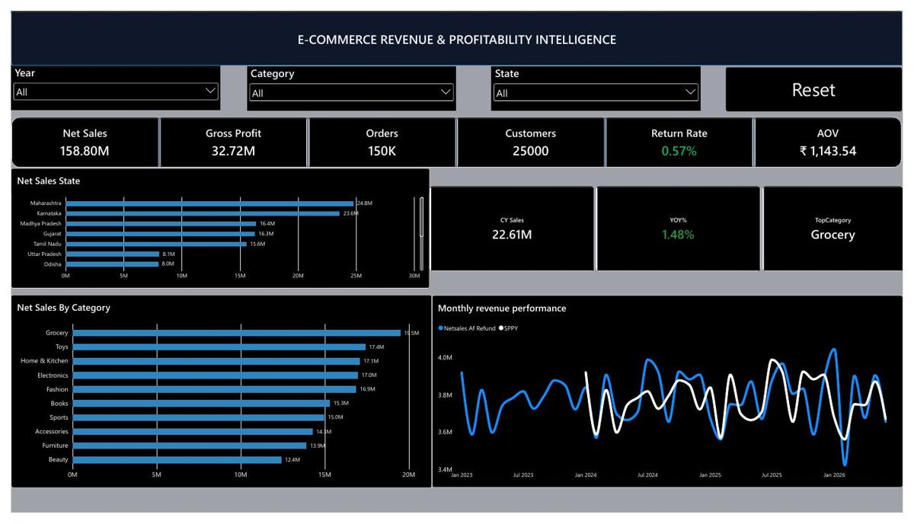
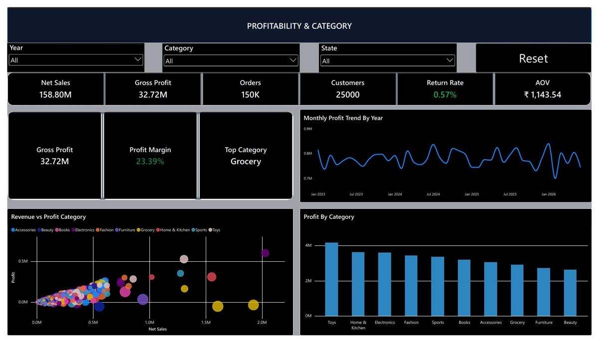
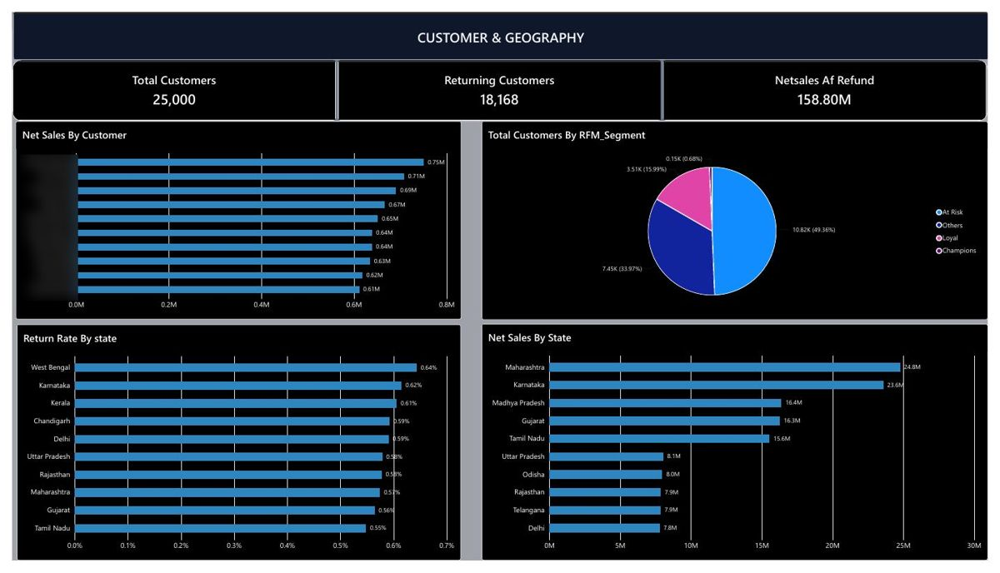

1. Business Problem
An e-commerce business wanted to understand how revenue, discounts, returns, products, and customer behaviour affect overall sales performance and profitability. The business needed a way to monitor monthly trends, identify profitable product categories, understand customer segments, and track sales executive performance—all in one place.
Key Business Questions
- Which products and categories generate the most revenue and profit?
- How do discounts and returns affect overall profitability?
- How does revenue performance change month over month?
- Which customers and sales executives contribute most to performance?
- How are customers distributed across RFM (Recency, Frequency, Monetary) segments?
2. Dataset Overview
The dataset contains transactional data from an e-commerce platform, spread across multiple related tables covering orders, products, customers, payments, and returns.
3. Data Quality Checks
Before building the Power BI report, I profiled and validated all source tables in SQL to ensure data integrity.
Checks Performed
- Verified row counts across all tables and confirmed no unexpected duplicates on primary keys.
- Checked for NULL values in critical columns:
order_id,customer_id,product_id,unit_price, andorder_date. - Validated that discount values fell within the expected 0–1 range.
- Confirmed all
order_idvalues inorder_itemsexisted in theorderstable (referential integrity). - Identified and reviewed orders with zero or negative net sales values.
- Checked return records for orphaned entries (returns without matching order items).
- Profiled 367,000+ order items across transaction, payment, and return tables before reporting.
-- Check for NULLs in critical columns
SELECT
SUM(CASE WHEN order_id IS NULL THEN 1 ELSE 0 END) AS null_order_id,
SUM(CASE WHEN customer_id IS NULL THEN 1 ELSE 0 END) AS null_customer_id,
SUM(CASE WHEN product_id IS NULL THEN 1 ELSE 0 END) AS null_product_id,
SUM(CASE WHEN unit_price IS NULL THEN 1 ELSE 0 END) AS null_unit_price
FROM order_items;
-- Validate discount range
SELECT COUNT(*) AS out_of_range_discounts
FROM order_items
WHERE discount < 0 OR discount > 1;4. SQL Analysis
I used SQL to build the core business metrics that feed the Power BI report. CTEs were used to keep queries readable and maintainable.
Revenue Calculation
-- Core revenue metrics using CTE
WITH revenue AS (
SELECT
oi.order_id,
o.order_date,
o.customer_id,
p.category_id,
oi.quantity * oi.unit_price AS gross_sales,
oi.quantity * oi.unit_price * oi.discount AS discount_amount,
oi.quantity * oi.unit_price * (1 - oi.discount) AS net_sales,
oi.quantity * p.cost_price AS cost_of_goods
FROM order_items oi
JOIN orders o ON oi.order_id = o.order_id
JOIN products p ON oi.product_id = p.product_id
)
SELECT
YEAR(order_date) AS yr,
MONTH(order_date) AS mth,
SUM(gross_sales) AS gross_sales,
SUM(discount_amount) AS total_discounts,
SUM(net_sales) AS net_sales,
SUM(net_sales - cost_of_goods) AS gross_profit,
ROUND(SUM(net_sales - cost_of_goods) / NULLIF(SUM(net_sales),0) * 100, 2) AS profit_margin_pct
FROM revenue
GROUP BY YEAR(order_date), MONTH(order_date)
ORDER BY yr, mth;Month-over-Month Revenue Growth
-- Month-over-month comparison using window function
WITH monthly AS (
SELECT
YEAR(o.order_date) AS yr,
MONTH(o.order_date) AS mth,
SUM(oi.quantity * oi.unit_price * (1 - oi.discount)) AS net_sales
FROM order_items oi
JOIN orders o ON oi.order_id = o.order_id
GROUP BY YEAR(o.order_date), MONTH(o.order_date)
)
SELECT
yr, mth, net_sales,
LAG(net_sales) OVER (ORDER BY yr, mth) AS prev_month_sales,
ROUND((net_sales - LAG(net_sales) OVER (ORDER BY yr, mth))
/ NULLIF(LAG(net_sales) OVER (ORDER BY yr, mth),0) * 100, 2) AS mom_growth_pct
FROM monthly;RFM Customer Segmentation
-- RFM scoring
WITH rfm_base AS (
SELECT
o.customer_id,
DATEDIFF(DAY, MAX(o.order_date), GETDATE()) AS recency_days,
COUNT(DISTINCT o.order_id) AS frequency,
SUM(oi.quantity * oi.unit_price * (1 - oi.discount)) AS monetary
FROM orders o
JOIN order_items oi ON o.order_id = oi.order_id
GROUP BY o.customer_id
),
rfm_scored AS (
SELECT *,
NTILE(5) OVER (ORDER BY recency_days ASC) AS r_score,
NTILE(5) OVER (ORDER BY frequency DESC) AS f_score,
NTILE(5) OVER (ORDER BY monetary DESC) AS m_score
FROM rfm_base
)
SELECT customer_id, r_score, f_score, m_score,
r_score + f_score + m_score AS total_score,
CASE
WHEN r_score >= 4 AND f_score >= 4 THEN 'Champions'
WHEN r_score >= 3 AND f_score >= 3 THEN 'Loyal Customers'
WHEN r_score >= 3 THEN 'Potential Loyalists'
WHEN r_score <= 2 AND f_score <= 2 THEN 'At Risk'
ELSE 'Others'
END AS rfm_segment
FROM rfm_scored;5. Data Model & Relationships
The Power BI report uses a star schema. The fact table (order_items) sits at the centre with dimension tables connected via foreign keys. A separate date table was created in Power BI to enable time intelligence functions.
order_items → orders (order_id)
orders → customers (customer_id)
orders → sales_executives (exec_id)
order_items → products (product_id)
products → product_categories (category_id)
orders → payments (order_id)
order_items → returns (item_id)
All tables → Date Table (date)
6. KPI Definitions
All KPIs were defined as DAX measures in Power BI for consistency across all report pages.
Core Measures
- Gross Sales = SUM(Quantity × Unit Price)
- Discount Amount = SUM(Quantity × Unit Price × Discount)
- Net Sales = Gross Sales − Discount Amount
- Return Value = SUM(returns[return_value])
- Net Revenue = Net Sales − Return Value
- Gross Profit = Net Sales − Cost of Goods Sold
- Profit Margin % = DIVIDE(Gross Profit, Net Sales)
- Return Rate % = DIVIDE(Return Value, Gross Sales)
-- Example DAX measure
Net Sales =
SUMX(
order_items,
order_items[quantity] * order_items[unit_price] * (1 - order_items[discount])
)
Profit Margin % =
DIVIDE([Gross Profit], [Net Sales], 0)7. Dashboard Screenshots



8. Key Findings
- Net Sales totalled approximately ₹158.8M across 150,000 orders and 25,000 customers.
- Grocery was the leading category by net sales at ₹19.5M.
- Overall profit margin held at 23.39% across the analysed period.
- Return rate remained low at 0.57% of gross sales.
- Approximately 49% of customers fell into the “At Risk” RFM segment, suggesting a significant portion of the customer base had not purchased recently.
- Monthly revenue showed variation across the period, with certain months recording higher growth rates than others.
9. Observations & Next Steps
The following observations are based on the analysis and represent areas that the business could investigate further. They are not prescriptive recommendations.
- The high proportion of At Risk customers (49%) suggests customer retention could be an area worth investigating, particularly re-engagement campaigns for customers who have not purchased in recent months.
- The low return rate (0.57%) suggests return management is not currently a major issue, though tracking it over time could identify category-level concerns early.
- Profit margin analysis by category could identify which categories are most and least profitable, enabling more informed decisions about product mix and discount strategy.
- Sales executive performance data could be used to understand regional differences and identify coaching opportunities.
10. GitHub Repository & Limitations
Project Limitations
- The dataset is a simulated e-commerce dataset and may not reflect the complexity of real-world transactional data.
- RFM segmentation uses fixed score thresholds. Different thresholds would produce different segments.
- Profit margin calculations depend on cost_price values in the dataset; if those values are approximate, margins will be approximate.
- The analysis does not account for seasonality or external market factors that might explain revenue trends.
- Geographic analysis is limited to customer registration data, which may not reflect where purchases were actually made.